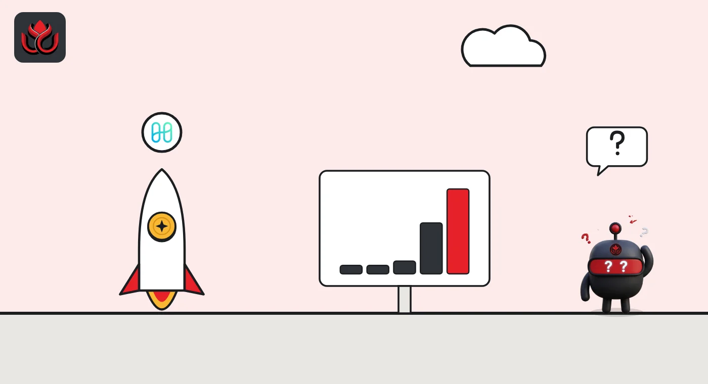

Harmony's ONE jumped 85% in a day and a half. Trading hit 3.4 times its market value
ONE went from about $0.00106 to $0.00196 on CoinGecko as daily trading rose from about $2 million to $97 million. We could not confirm an official reason for it.
Key points
- ONE, the token of the Harmony blockchain, rose from about $0.00106 at 7 p.m. ET on November 5 to $0.00196 at 6:42 a.m. ET on November 7, about 85%, CoinGecko data show.
- 24-hour trading reached about $97.5 million, 3.4 times ONE's $28.6 million market value. Two days earlier, daily volume was about $2 million.
- Binance handled about 67% of the volume, and its ONE/Turkish lira pair alone about 29%. We could not confirm an official reason for the move.
How far and how fast
Harmony's ONE token was one of the most searched coins on CoinGecko's trending list on Saturday morning. According to the CoinGecko page for ONE, the price sat near $0.00106 late on November 5 and began climbing at about 4 a.m. ET on November 6. By 6:42 a.m. ET on November 7 it was $0.00196.
That is a gain of about 85% in roughly 36 hours, and 39% in the last 24 hours alone. Over seven days ONE is up about 68%. It is still more than 99% below its record of $0.379, set in October 2021.
Volume far bigger than the coin
CoinGecko counted about $97.5 million of ONE traded in 24 hours, against a market value of about $28.6 million. In other words, the whole supply in circulation (about 14.87 billion ONE) changed hands more than three times over, on paper.
On November 5, daily volume was only about $2 million to $3 million. It jumped to about $20 million by 7 a.m. ET on November 6 and kept rising through the night.
ONE 24-hour trading volume on CoinGecko
US$ million
Source: CoinGecko API, rolling 24-hour volume, read November 7, 2026, 6:45 a.m. ET.

Where the trading happened
CoinGecko lists 27 ONE markets. Binance carried about $65.5 million of the $97.6 million counted across them, about 67%. Its ONE/USDT pair led with about $36.9 million, followed by ONE against the Turkish lira at about $28.6 million. HTX, Pionex and OKX each saw $7 million to $10.5 million.
A lira pair taking almost a third of all volume is unusual for a coin this size. It suggests a lot of the buying came from traders on Binance's Turkish lira market, but exchange order books do not show who the buyers are.
What we could not find
We looked for a reason and did not find one we could confirm. We found no Harmony announcement that we could open and no exchange notice tied to the move. Our newsroom tools could not reach Harmony's website or its block explorer this morning, so we could not check holder or exchange-wallet activity on-chain.
Context from CoinGecko's price history: ONE fell from about $0.00126 on August 10 to $0.00071 on August 16, on a one-day volume jump to $66.6 million. ONE then spiked to about $0.0042 on September 21 on $116.5 million of volume before sliding back. The new jump is the biggest burst of trading since then.
LC Insight analysis
This section is our reading of the facts above, not a statement of fact.
- We think a move like this, with volume several times market value and no news, is driven by short-term traders rather than a change in the project. The September 21 spike faded within days; whether this one holds is an open question.
- Thin coins can move fast in both directions. A market value under $30 million means a few large orders can swing the price.
- The Turkish lira pair is the detail to follow: almost a third of all ONE trading ran through one local-currency market on Binance.
What's next
- Any official Harmony or exchange statement
- Whether volume stays above market value or fades back to a few million dollars a day
- The share of trading on Binance's Turkish lira pair
Disclaimer. This article is based on public information and the sources listed below as of the update time shown. It is for information only and is not investment, legal or tax advice. Figures may change as companies and authorities publish new data.